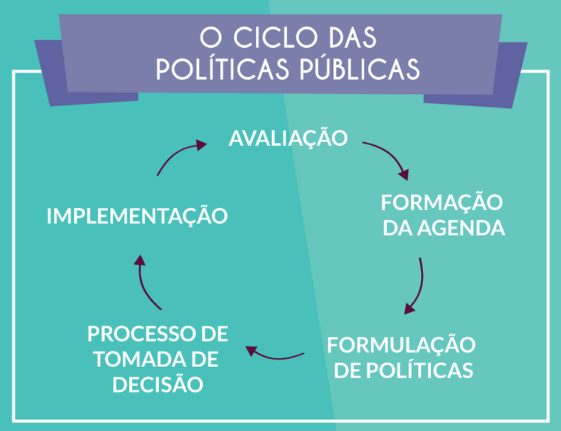
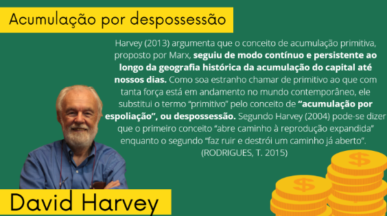
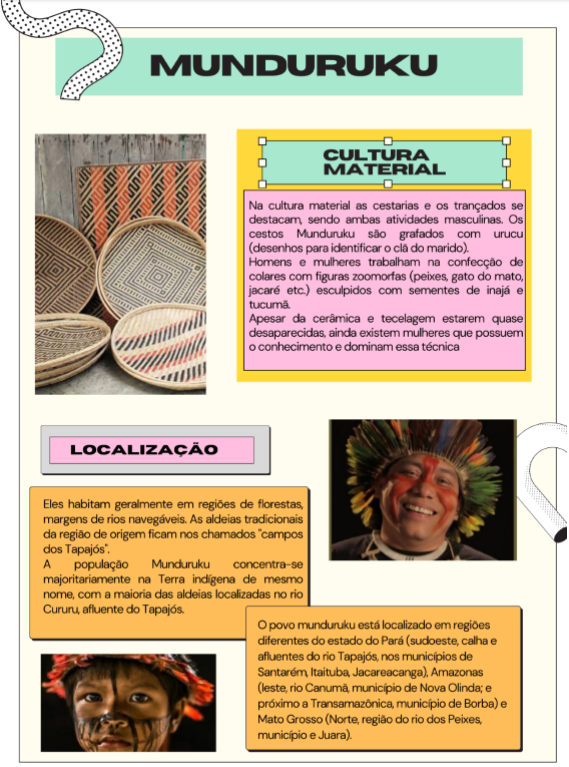
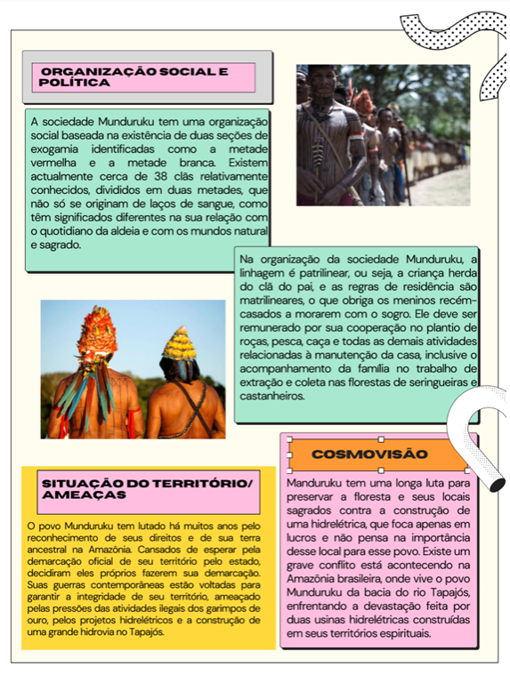
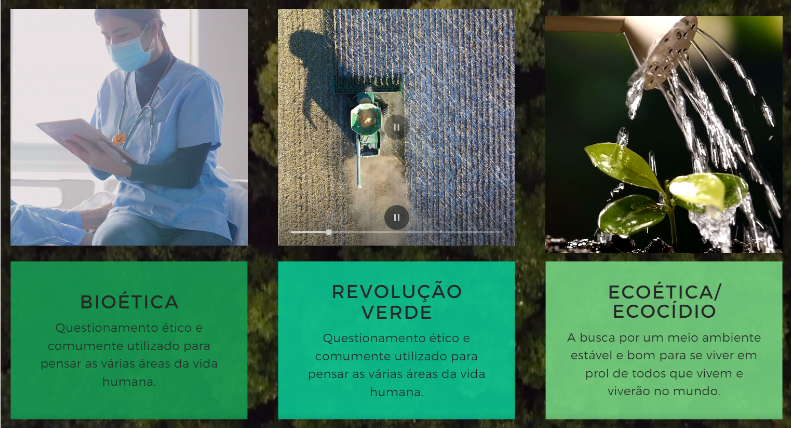

Ciências Humanas
Habilidades
EM3LGG203: Analisar formas contemporâneas de publicidade em contexto digital e peças de campanhas publicitárias e políticas, destacando estratégias de engajamento. viralização, mecanismos de persuasão e efeitos de sentido das múltiplas linguagens, de forma a particionar de debates do campo de atuação da vida pública e tomar decisões conscientes e fundamentadas.
EMT3CHS202: Identificar e caracterizar a presença do paternalismo. do autoritarismo e do populismo na política, na sociedade e nas culturas brasileira e latino-americana, em períodos ditatoriais e democráticos, relacionando-os com as formas de organização e de articulação das sociedades em defesa da autonomia, da liberdade, do diálogo e da promoção da democracia. da cidadania e dos direitos humanos na sociedade atual.
EMI3CHS203: Analisar a formação de diferentes países, povos e nações e de suas experiencias políticas e de exercício da cidadania, aplicando e problematizando conceitos políticos clássicos, como estado, poder, formas, sistemas e regimes de governo, soberania etc.
EMT3CHS204: Discutir o papel dos organismos internacionais no contexto mundial. com vistas a elaboração de uma visão crítica sobre seus limites e suas formas de atuação nos países, considerando os aspectos positivos e negativos dessa atuação para as populações locais.
EMT3CHS205: Analisar os princípios da declaração dos Direitos Humanos, recorrendo às noções de justiça, igualdade e fraternidade. Identificar os progressos e entraves a concretização desses direitos nas diversas sociedades contemporâneas e promover ações concretas diante da desigualdade e das violações desses direitos em diferentes espaços de vivência, respeitando a identidade de cada grupo e de cada indivíduo.
EMT3CHS206: Analisar as características socioeconômicas da sociedade brasileira, com base em documentos de diferentes fontes, propondo medidas para enfrentar os problemas identificados e construir uma sociedade mais justa. inclusiva e democrática. que valorize o protagonismo de seus cidadãos.
EMT3CHS207: Caracterizar e avaliar os diversos espaços e redes de informação e de comunicação na sociedade, considerando suas formas de regulamentação, a democratização do acesso e da produção de conteúdo, a garantia da segurança e privacidade nestes ambientes e o direito à comunicação.
Competências
Identificar e combater as diversas formas de injustiça, preconceito e violência, adotando princípios éticos, democráticos, inclusivos e solidários e respeitando os Direitos humanos.
Políticas públicas
Existem diversos formatos de políticas públicas e elas abrangem áreas como: educação, saúde, meio ambiente, transporte, cultura... Além disso, podem ser do âmbito municipal, estadual e/ou federal. Alguns tipos de políticas públicas: Distributivas: que destinam bens/ou serviços à população, como campanha de vacinação e fornecimento de iluminação pública. Redistributivas: que alocam a uma parcela específica da população bens e serviços utilizando recursos retirados de outros grupos, como programas habitacionais e isenção de imposto de rende para famílias de baixa renda. Regulatórias: que estabelecem regras instituindo modelos de comportamentos e princípios de conduta que tomam forma de lei, como a legislação trabalhista e a restrição à venda de algum produto considerado nocivo à saúde, como o cigarro. Implementação de políticas públicas:
Acumulação primitiva
A acumulação primitiva é o processo histórico que “transforma os meios de subsistência e de produção em capital e os trabalhadores em trabalhadores assalariados”, ou seja, é o processo que privatiza a terra, a água, os minerais, que expulsa camponeses. e que transforma a força de trabalho em mercadoria. Visão diferente da acumulação primitiva idílica dos economistas ingleses, no qual a acumulação primitiva seria o bom emprego do tempo por uns em detrimento da má utilização do tempo por pelos outros.
Diversidade Indígena
 Bioética
Movimentos Sociais
Se formam quando as pessoas se organizam e lutam contra diferentes tipos de opressão, intervindo para que haja uma mudança social. Para que uma ação coletiva seja considerada um movimento social é preciso ter o objetivo de alcançar um fim com a intenção de transformar a realidade (desigualdade social, educação, saúde, fome, diferenças de gênero, etnia, entre outros).
República de Weimar
Experiência republicana que se inicia na profunda crise após o fim da Primeira Guerra Mundial (1914 - 1918) e as consequências impostas pelo Tratado de Versalhes às nações derrotadas. Características: Baseado em uma política de expansão imperial Industrialização interna e nacionalismo político O império alemão afunda com a derrota na Primeira Guerra.
Movimentos Operários
Quando surgem: Europa, século XVIII, consequência da concentração de trabalhadores nas fábricas. Longas jornadas de trabalho, falta de direitos trabalhistas e patrões autoritários foram alguns dos motivos. Principais pautas: Crescimento econômico e distribuição mais igualitária de renda; segurança social; maior participação do cidadão na vida pública, como acesso a direito ao voto universal e secreto. Principais valores: Liberdade e garantia do consumo privado e do progresso material. Formas de ação: Ludismo (sabotagem às máquinas) e Cartismo; associações corporativistas e sindicatos; greves; manifestações.